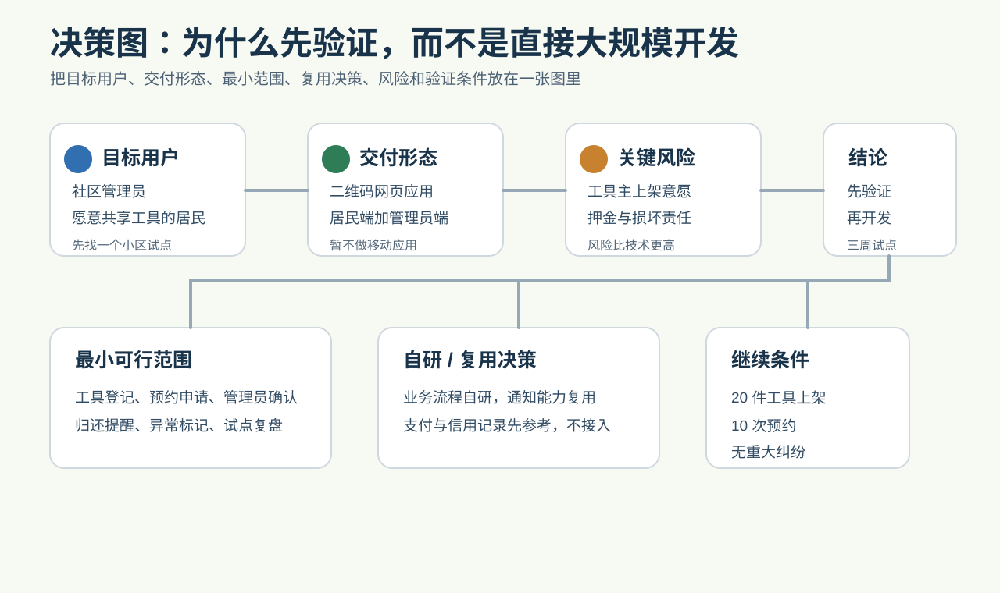

横幅：核心结论
可进入最小可行产品实验。
目标用户
小区居民、物业运营和社区志愿者。
评分矩阵
| 维度 | 评分 | 证据分类 |
|---|---|---|
| 目标用户清晰度 | 4/5 | 推断 |
| 技术可行性 | 4/5 | 事实 |
| 商业化可行性 | 2/5 | 证据缺口 |
评分是预评审信号，不是投资排序或成功率承诺。
证据看板
事实：线下物品共享有损坏风险。假设：社区信任降低冷启动。推断：工具共享场景具体。证据缺口：供需密度。
评审委员会意见
产品、市场、用户、技术、复用、商业化、风险、执行和视觉 / 原型视角建议做单社区实验。
市场流程
社区盘点 -> 工具发布 -> 预约确认 -> 归还记录。
决策图

风险图
损坏纠纷、押金规则和供给不足是主要风险。
验证路线
7 天盘点，14 天原型测试，30 天完成 20 次预约实验。
架构与路线
工具发布 -> 预约 -> 确认 -> 归还。